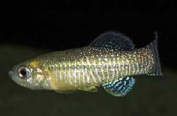

El Fartet en la Región de Murcia
El Fartet es un pez de pequeño tamaño que habita en las aguas salobres del litoral atlántico y mediterráneo español. Es una especie endémica, lo que significa que es exclusiva de la Península Ibérica, y está presente en la Región de Murcia.
Actualmente se encuentra en peligro de extinción debido a la progresiva perdida de hábitats idóneos para la especie. De ahí que esté estrictamente protegido por la ley y su conservación sea obligada.
Este pequeño pez, que alcanza un máximo de 4 a 5 cm de longitud presenta un marcado dimorfismo sexual.
El macho, más pequeño y esbelto que la hembra, tiene un colorido más vistoso, especialmente en la época reproductora, presentando una serie de bandas verticales azuladas en la parte posterior de su cuerpo que se extienden a la aleta caudal. La hembra presenta un diseño generalmente punteado de tonalidades parduzcas.
A pesar de ser una especie omnívora, su principal alimento son tanto las larvas de insectos como las de mosquitos.
Las portentosas características biológicas de este pez le permiten vivir tanto en agua dulce como salada, y soportar una amplia variación de la temperatura y del oxígeno disuelto en el agua.
Históricamente, el fartet en nuestra región era muy abundante tanto en el río Segura, a su paso por Murcia y en los canales de riego de su huerta, como en la ribera y salinas de la laguna costera del Mar Menor. Por desgracia, en la actualidad, su presencia ha quedado restringida a pequeños núcleos localizados en la ribera y salinas de dicha laguna.
La especie se encuentra tan cercana a la desaparición en nuestra Región que la Comunidad Autónoma, a través de la Consejería de Medio Ambiente, Agricultura y Agua y su Dirección General del Medio Natural, ha decidido poner en marcha una serie de mecanismos para frenar esta situación. Para ello ha establecido un convenio con el Departamento de Biología Animal de la Universidad de Murcia, por el cual se pretende localizar todas las poblaciones supervivientes en nuestra región, llevar a cabo un exhaustivo estudio del estado de conservación de las mismas y la elaboración de un plan de actuación para solventar los problemas más acuciantes.
-

Macho adjunto de fartet (Aphanius iberus)
-
Fartet hembra
-
Fartet macho (arriba), hembra (abajo)